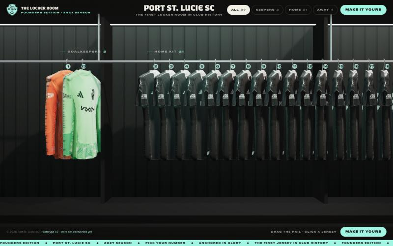
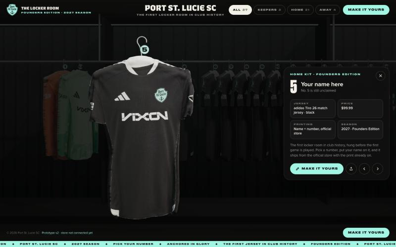
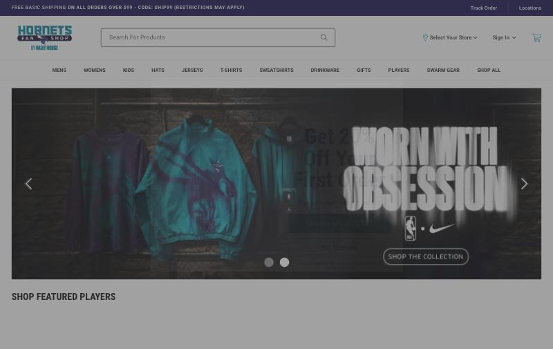
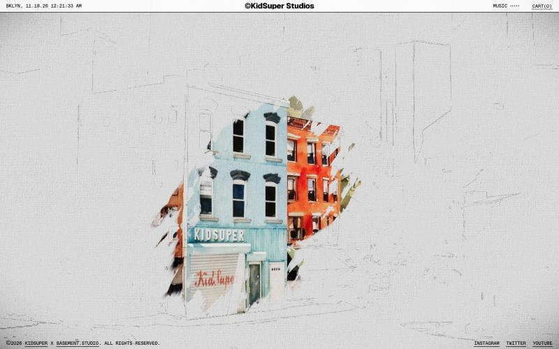
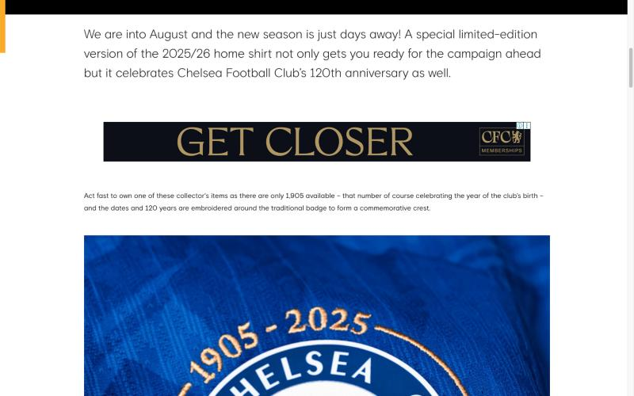
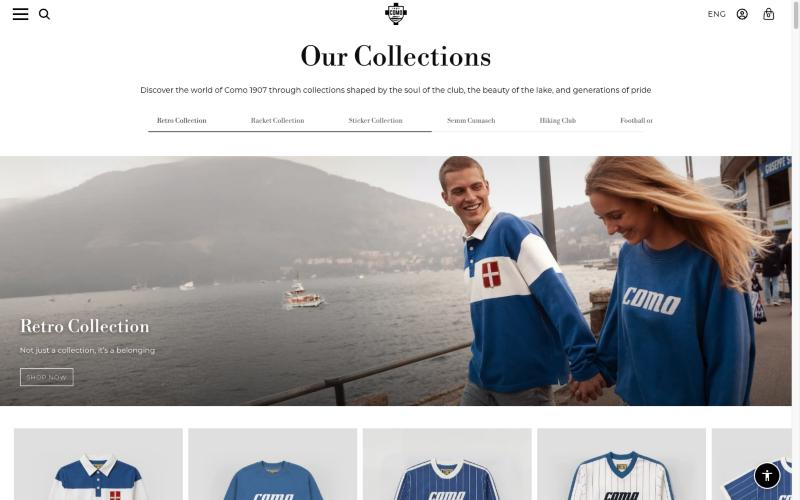
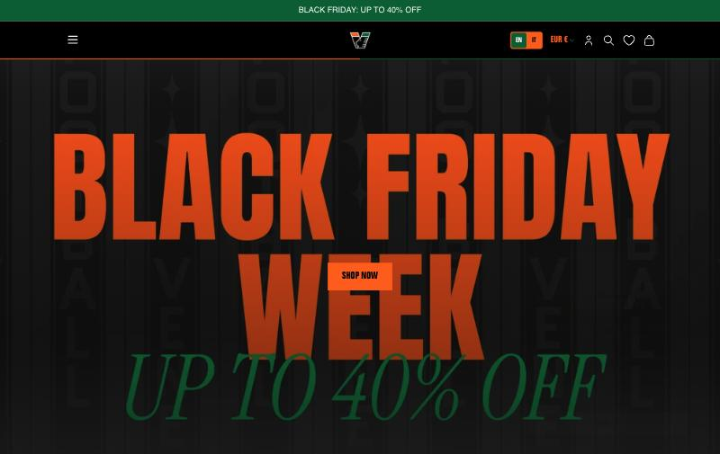
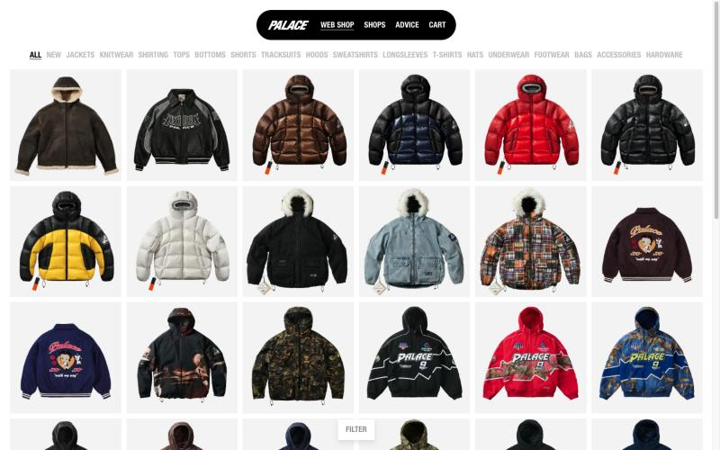
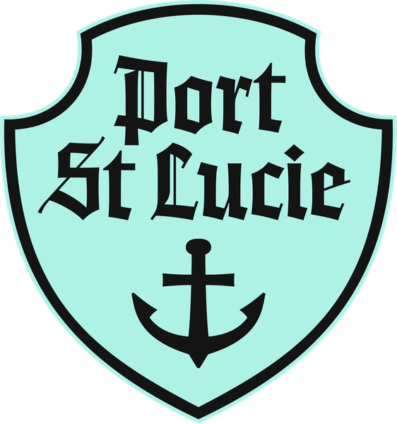
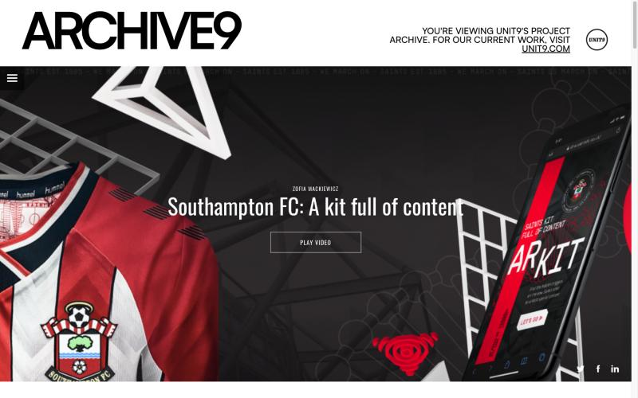

Port St. Lucie SC · Frente Shop
Una tienda que se compra fácil y se recuerda.
Noviembre 2026
El vestuario del club, colgado en un riel de camisetas.
Prototipo en yacare.io/shoppslsc

El riel

El detalle de una camiseta
Relevamos unas 20 referencias entre clubes y marcas.
Qué fuimos a buscar
Por dónde entramos
Barcelona, Real Madrid, Spurs, Man City, Knicks, Patriots.
Tienen tiendas convencionales.
Ahí estaba lo distinto. Lo ordenamos en tres grupos:
El vestuario del club en 3D, con asistente IA, atado al Mundial de Clubes.
Da error 404Otro vestuario 3D del mismo proveedor, con camisetas personalizables.
No se encuentraUna copia de la tienda del estadio, con avatar, caminata y otros fans.
Redirige a la tienda comúnUn mundo pintado de la marca, sobre el catálogo y el carrito de Shopify.
Sigue vivaLas de los clubes vivían aparte de la tienda y nadie las sostuvo. La que sigue viva es la tienda misma.

Hornets hoy: el dominio lleva a la tienda común

KidSuper World: sigue viva

La nota de Chelsea sobre la edición de 120 años
Qué buscaron
Que la escasez se pueda tocar. La cantidad es el año de fundación, cada camiseta lleva un parche con su número dentro de la serie y viene en una caja de presentación.
Cómo se venden
En la tienda oficial, sin 3D.
¿Funcionó?
No tenemos cifras de ventas. Lo que sí vimos: en la web es una nota y un botón, y la emoción de la edición no llega a la compra.
Ahí puede estar nuestra diferencia.
Las tres siguen vivas, corren sobre Shopify y no usan 3D.

Se navega por colecciones con nombre propio, cada una con su foto y su frase.
La base de nuestras colecciones.

La primera pantalla se entrega entera a la campaña del momento.
La base de nuestro hero.

Abre directo en la grilla, con un menú de cuatro opciones.
La vara de comprar fácil.
Cada aprendizaje del relevamiento lleva a una capa. Arriba se compra, abajo se recorre: la experiencia nunca se pone entre la persona y la compra.
Vende · Arriba
The Kit Room · Se recuerda · Al medio
Organizan y cuentan · Abajo
La primera pantalla está al servicio de la venta del momento.
Ejemplos de uso
Por qué
Es lo más rápido que se cambia y lo que más directo lleva a comprar.
Referencia
Venezia FC.

Port St. Lucie SC Cart (0)Wireframe de la home · tocá un ejemplo para cambiar el hero
The Kit Room, con el estilo que ya veníamos trabajando
Cómo cambia: la escena se viste según el momento
El vestuario con camisetas colgadas, debajo del hero.
Por qué va debajo
Siempre
Tiene una vista en grilla a un toque y cada camiseta abre su ficha real.
La tienda se ordena por colecciones con nombre propio, cada una con foto de campaña y una frase.
Por qué
Ejemplos de nombres (a definir)
Referencia
Como 1907.
Wireframe de la home · las colecciones al final
01 · Hero
Y se renueva sin esfuerzo.
Se actualiza
Cada semana.
02 · Artefacto
Y diferencia del resto de las tiendas de clubes.
Se actualiza
Por momento de la temporada.
03 · Colecciones
Cada una cuenta una parte del club.
Se actualiza
Por lanzamiento.
Cada capa se actualiza por separado.
Temporada 2021/22 · Unit9 y Formidable
Qué fue
La camiseta tenía marcas que la cámara del teléfono reconocía. Al apuntarle desde el navegador, sin app, aparecía contenido del club sobre la prenda. Se presentó como la primera camiseta de fútbol con AR.
Por qué nos interesa
La tecnología llega después de la compra y le da una segunda vida a la camiseta.

El caso en el archivo de Unit9
La idea
Quien compra una edición especial, por ejemplo Founders, desbloquea:
El límite
Si las marcas van impresas en la camiseta, hay que hacerlo con adidas, que fabrica las camisetas.
Un camino sin adidas
Algo que controla el club, como la etiqueta colgante o una tarjeta en la caja de la edición. No lo probamos.
Queda como idea de costado, para charlar con adidas o para una edición especial.
Gracias.
Preguntale lo que quieras al asistente. Conoce el contenido completo de esta presentación.
Este asistente responde solo sobre el contenido de esta presentación. Puede cometer errores. Para consultas formales, escribí a contact@yacare.io.